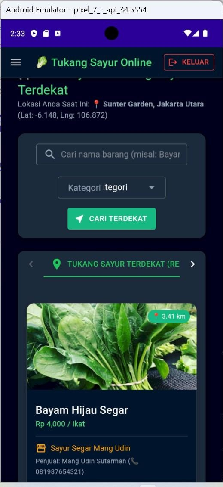
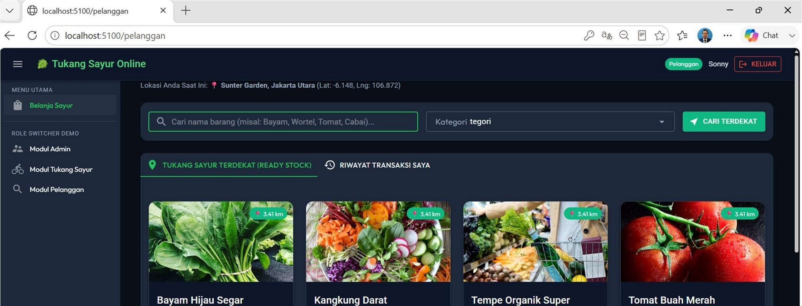

Tukang Sayur Online
Platform ekosistem perdagangan sayur hiper-lokal real-time untuk Admin, Tukang Sayur (Vendor), dan Pelanggan berbasis .NET 9, Blazor & MAUI Hybrid, MudBlazor 7.4.0, dan PostgreSQL.
Real-time hyper-local vegetable commerce ecosystem platform for Admins, Vendors (Tukang Sayur), and Customers powered by .NET 9, Blazor & MAUI Hybrid, MudBlazor 7.4.0, and PostgreSQL.

01. Ringkasan Eksekutif & Tujuan Utama 01. Executive Summary & Core Objectives
Tukang Sayur Online adalah platform ekosistem perdagangan sayur hiper-lokal real-time yang menghubungkan pedagang sayur/lapak (Tukang Sayur), Administrator, dan pembeli rumah tangga (Pelanggan). Sistem memodernisasi proses penjualan tradisional melalui visibilitas stok berbasis lokasi, pencatatan restock dan penjualan, status toko Online/Offline, analitik produk terlaris, serta pemantauan stok habis.
Tukang Sayur Online is a real-time hyper-local vegetable commerce platform connecting traditional vegetable vendors (Tukang Sayur), Administrators, and residential Customers. It modernizes traditional selling workflows through location-aware stock visibility, restock and sales recording, Online/Offline shop status, best-selling product analytics, and real-time out-of-stock monitoring.
Master Catalog & Analytics
Master Catalog & Analytics
Admin mengelola katalog master produk global, menetapkan harga acuan default, memantau analitik produk terlaris, dan melacak item yang habis.
Admin manages global master product catalog, sets default reference prices, monitors best-seller analytics, and tracks out-of-stock items.
Vendor Inventory & POS
Vendor Inventory & POS
Vendor mencatat restock dari pasar induk, mengelola stok lokal & harga jual, melakukan pencatatan penjualan langsung, serta mengatur status toko Online/Offline.
Vendor records restock purchases, maintains local inventory & prices, inputs direct sales, and toggles shop Online/Offline status.
Customer Geo Discovery
Customer Geo Discovery
Pelanggan menemukan pedagang terdekat yang Online dan memiliki ready stock, melihat harga/jarak, dan mengonfirmasi transaksi pembelian.
Customers discover nearby Online vendors with available stock, check prices/distances, and confirm purchase transactions.
02. Peran Pengguna & Matriks Hak Akses 02. User Roles & Access Permission Matrix
| Fitur / Modul | Admin | Tukang Sayur (Vendor) | Pelanggan (Customer) |
|---|---|---|---|
| Pendaftaran & Autentikasi | Pra-konfigurasi / Pre-configured | Registrasi mandiri / Self-registration | Registrasi mandiri / Self-registration |
| Katalog Master Produk | Buat / Edit / Hapus (CRUD) | Lihat & Pilih dari Master | Lihat Katalog |
| Restock Stok Lokal | - | Ya (Input Restock) | - |
| Penjualan Langsung / POS | - | Ya (Catat Penjualan) | - |
| Status Online / Offline | - | Ya (Toggle Sakelar Status) | - |
| Pencarian Vendor Terdekat | - | - | Ya (Berdasarkan Lokasi/Jarak) |
| Pembelian Produk Online | - | - | Ya (Konfirmasi Transaksi) |
| Analitik Produk Terlaris | Ya (Global Analytics) | Terlihat melalui transaksi | - |
| Monitoring Stok Kosong | Terpusat (Centralized Out-of-Stock) | Indikator per barang (Stok Habis) | Stok 0 disembunyikan |
03. Dokumentasi Aplikasi Mobile (Bilingual User Guide) 03. Mobile Application Documentation (Bilingual Gallery)
Berikut adalah 12 layar utama aplikasi mobile yang mendukung alur kerja Admin, Pelanggan, dan Tukang Sayur (Vendor) dengan integrasi Blazor & .NET MAUI Hybrid:
Here are the 12 primary mobile screens supporting Admin, Customer, and Tukang Sayur (Vendor) workflows powered by Blazor & .NET MAUI Hybrid:

- Menampilkan identitas Tukang Sayur Online saat aplikasi mobile melakukan inisialisasi.
- Tampilan awal sebelum proses autentikasi atau pemulihan sesi pengguna.
- Displays the Tukang Sayur Online brand while the mobile application initializes.
- Acts as the first visual state before authentication or session restoration.

- Pengguna masuk menggunakan email dan password.
- Shortcut peran Admin, Tukang Sayur, dan Pelanggan tersedia untuk demo.
- Pengguna baru dapat menuju form registrasi.
- Users sign in with email and password.
- Role shortcuts for Admin, Tukang Sayur, and Customer are available in demo mode.
- New users can navigate to account registration.

- Menampilkan katalog produk master yang digunakan di seluruh platform.
- Pencarian dan filter kategori membantu admin menemukan produk.
- Menampilkan nama, kategori, harga acuan, dan kontrol aksi.
- Lists master catalog products used throughout the platform.
- Search and category filters help administrator locate products.
- Shows name, category, default price, and action controls.

- Form Tambah Barang Baru dari dashboard Admin.
- Input nama barang, kategori, satuan (kg, ikat, bungkus), harga acuan, URL gambar.
- Menambahkan barang ke katalog master global.
- Opens Tambah Barang Baru form from Admin dashboard.
- Inputs product name, category, unit, default price, image URL, and short description.
- Adds product to the global master catalog upon saving.

- Tab Produk Terlaris memberi peringkat produk berdasarkan kuantitas & omzet.
- Membantu Admin mengidentifikasi komoditas dengan permintaan tinggi.
- Ranks products using recorded sales quantity and revenue.
- Helps administrator identify high-demand commodities across vendors.

- Monitoring barang kosong yang stok vendor-nya telah mencapai nol.
- Menampilkan toko, pemilik, produk, dan status stok.
- Lists items whose vendor inventory has reached zero.
- Shows shop name, vendor owner, product, category, and status.

- Menampilkan lokasi saat ini dan pencarian produk terdekat.
- Hanya menampilkan produk ready stock dari pedagang yang Online.
- Kartu produk menampilkan gambar, nama, harga, toko, dan jarak.
- Displays customer location and nearby search controls.
- Only presents nearby products with available stock from active vendors.
- Product cards show image, name, price, vendor identity, and distance.

- Tombol Temui & Beli Langsung membuka dialog transaksi.
- Pelanggan mengisi jumlah dan alamat pengantaran / titik temu.
- Mengonfirmasi total pembayaran dan mengurangi stok secara real-time.
- Opens purchase transaction dialog upon selecting Temui & Beli.
- Customer specifies quantity and delivery address or meeting point.
- Summarizes total payment and deducts vendor stock upon confirmation.

- Dashboard operasional pedagang dengan sakelar Status Online/Offline.
- Aksi cepat Input Stok Masuk (Restock) dan Catat Penjualan Langsung.
- Kartu ringkasan saldo dompet, total income, pengeluaran restock, dan total item.
- Vendor operational workspace with Status Online toggle switch.
- Quick action buttons for restock input and direct sales recording.
- Summary cards display wallet balance, sales income, restock cost, and local stock count.

- Area Stok & Harga Jual Saya menampilkan inventori milik vendor.
- Setiap item menampilkan nama, kategori, jumlah stok, harga jual, dan status ketersediaan.
- Lists vendor's local inventory with stock quantities and selling prices.
- Each item shows name, category, available quantity, unit price, and availability status.

- Memilih barang dari katalog master, mencatat jumlah dan harga beli per satuan.
- Dapat menambahkan catatan lokasi pasar/kulakan untuk penelusuran.
- Menambah stok lokal dan total pengeluaran restock.
- Selects master product, records purchased quantity and unit purchase cost.
- Optionally adds wholesale market location notes for traceability.
- Increases local stock and updates restock expenditure summary.

- Form penjualan langsung (POS) untuk transaksi di luar alur online pelanggan.
- Pilih barang, jumlah, harga jual retail, dan catatan pembeli.
- Mengurangi stok dan menambahkan saldo/pemasukan pedagang.
- Direct-sale POS form recording sales made outside the online customer flow.
- Selects product, quantity, retail selling price, and buyer notes.
- Deducts stock and adds transaction value to vendor balance/income.
04. Dokumentasi Web Operational Workspace 04. Web Operational Workspaces Showcase

Dashboard Tukang Sayur (Vendor Workspace)
Vendor Operational Workspace
Dashboard utama pedagang menampilkan identitas lapak, status operasional Online/Offline, saldo dompet aplikasi (Rp 350.000), total income penjualan (Rp 40.000), pengeluaran restock (Rp 90.000), dan tabel stok & harga jual.
Primary vendor dashboard displaying shop identity, Online/Offline operational toggle, application wallet balance (Rp 350,000), total sales income, restock expenses, and interactive stock & pricing tables.

Modal Input Restock Barang
Restock Input Modal
Form modal untuk memasukkan persediaan barang baru dari pasar induk (kulakan). Memungkinkan pemantauan harga beli per unit (misal Bawang Merah Brebes 10 ikat @ Rp 3.000) dan catatan lokasi pasar.
Modal dialog for recording wholesale restock purchases from central markets. Supports tracking purchase quantity, unit cost (e.g. Brebes Shallots 10 units @ Rp 3,000), and wholesale location notes.

Riwayat Mutasi Transaksi & Keuangan
Transaction & Mutation Ledger
Tab Riwayat Mutasi menampilkan rekam timestamp transaksi secara detail, memisahkan transaksi Terjual (Keluar + Income) dan Restock (Masuk - Pengeluaran) secara transparan.
Transaction History ledger logging precise timestamps, distinguishing sales income (+ Income) and restock inventory purchases (- Expense) for full financial transparency.

Master Data Barang Global (Admin)
Global Master Product Catalog (Admin)
Workspace Admin untuk mengelola database produk platform secara terpusat, mencakup foto produk, nama komoditas, kategori (Bumbu & Rempah, Sayuran Hijau, Lauk Pauk), harga acuan default, dan kontrol aksi edit/hapus.
Central Administrator portal for maintaining global product master data, including imagery, commodity categories, unit default reference prices, and CRUD management controls.

Laporan Monitoring Stok Kosong (Admin)
Centralized Out-of-Stock Report (Admin)
Memberikan Admin visibilitas waktu-nyata terhadap toko/lapak pedagang yang stok persediaannya telah mencapai 0, mempermudah koordinasi restock atau suplai komoditas.
Provides Administrators with real-time visibility into vendor shops whose local stock has dropped to zero, enabling proactive supply replenishment coordination.

Pencarian Sayur & Vendor Terdekat
Nearby Vendor & Product Discovery
Dashboard pelanggan dengan fitur kalkulasi lokasi geo real-time (misal Sunter Garden, Jakarta Utara). Hanya menampilkan produk dari pedagang berstatus Online yang memiliki persediaan stok.
Customer discovery engine with real-time geo-location calculations. Automatically filters and presents ready-stock products exclusively from active Online vendors.
05. Aturan Stok, Status, dan Transaksi Sistem 05. System Stock, Status & Transaction Rules
| Aturan / Business Rule | Perilaku Sistem (System Behavior) | |
|---|---|---|
| Stok Lokal Vendor | Restock menambah jumlah stok lokal pedagang dan menambahkan total pengeluaran modal restock. | Restocking increases vendor local inventory and adds to total restock expenditure. |
| Penjualan & Pembelian | Penjualan langsung (POS) maupun transaksi pembelian dari pelanggan mengurangi stok barang vendor secara instan. | Direct sales (POS) and customer purchases deduct vendor product stock immediately. |
| Saldo / Income Aplikasi | Penjualan yang sukses tercatat menambah saldo/pemasukan pedagang sesuai dengan nilai total nominal transaksi. | Recorded sales increase the application balance and vendor income according to total transaction value. |
| Status Online Lapak | Pedagang berstatus Online dengan persediaan ready stock dapat muncul pada pencarian discovery pelanggan terdekat. | An Online vendor with ready stock is visible on customer nearby discovery feeds. |
| Status Offline Lapak | Saat pedagang mengubah status menjadi Offline (istirahat/tutup), toko dan seluruh produknya disembunyikan dari discovery pelanggan. | When switched Offline, the shop and all its products are hidden from customer discovery view. |
| Stok 0 (Habis) | Produk dengan stok 0 tidak lagi ditampilkan di sisi pelanggan; pedagang melihat status Stok Habis, dan Admin melihatnya di Laporan Barang Kosong. | Products reaching 0 stock disappear from customer discovery; vendors see Out of Stock, and Admin monitors them in Out-of-Stock report. |
06. Skenario Uji Fungsional & Glosarium 06. Functional Test Scenarios & Glossary
| Skenario Uji | Langkah Utama | Hasil yang Diharapkan |
|---|---|---|
| Registrasi Vendor | Daftarkan akun Tukang Sayur dengan nama lapak dan lokasi jualan. | Register a Tukang Sayur account with shop identity and location details. |
| Input Restock | Pilih barang master, isi qty & harga beli, lalu simpan. | Stok lokal bertambah & pengeluaran modal restock diperbarui. |
| Penjualan Langsung | Jual item melalui modal penjualan langsung. | Stok berkurang, saldo/income bertambah, transaksi muncul di riwayat. |
| Toggle Offline | Ubah sakelar Status Online menjadi Offline. | Lapak & produk tidak muncul lagi pada pencarian pelanggan. |
| Geo Discovery | Cari produk ketika vendor Online dan stok tersedia. | Produk muncul beserta informasi jarak (km) dan sisa stok. |
| Deplesi Stok (Stok Habis) | Lakukan transaksi hingga stok menjadi 0. | Produk hilang dari discovery, vendor melihat Stok Habis, Admin melihat di Barang Kosong. |
Glosarium Istilah Technical
Technical Terms Glossary
- Katalog Master: Daftar produk global yang dikelola Admin dan dipilih vendor saat restock.
- Restock: Pencatatan stok masuk dari pasar induk ke inventori lokal pedagang.
- Ready Stock: Persediaan barang lokal pedagang yang kuantitasnya lebih besar dari 0.
- Online / Offline Status: Sakelar kesiapan lapak untuk mengontrol visibilitas di aplikasi pelanggan.
- Geo-Location Engine: Fitur kalkulasi jarak geografis (koordinat lat/lng) antara pelanggan dan lokasi lapak pedagang.